ATF-FUZZ
FVP环境搭建
FVP下载
https://developer.arm.com/Tools and Software/Fixed Virtual Platforms
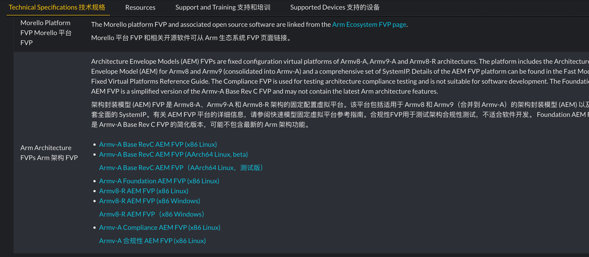
推荐直接下载：
Armv-A Base RevC AEM FVP (x86 Linux)
Armv-A Base RevC AEM FVP (AArch64 Linux, beta)
下载完成后解压的到Base_RevC_AEMvA_pkg
sudo apt install xterm
tar -xzvf FVP_Base_RevC-2xAEMvA_11.25_15_Linux64.tgz
# Base_RevC_AEMvA_pkg
注意对应的binary文件在AEMv8R_base_pkg/models/Linux64_GCC-9.3目录下
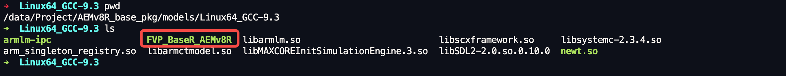
FVP的快捷的两种启动方法：1. ARM Develop Studio可视化启动 2.command line启动。本教程主要使用command line方式启动。
BL33构建
BL33作为None-security world镜像，一般情况下为uboot，当然也可以直接跳转到kernel。
export CROSS_COMPILE=/data/toolchains/SYS_PUBLIC_TOOLS/.toolchain/gcc-arm-10.3-2021.07-x86_64-aarch64-none-linux-gnu-linux-5.10/bin/aarch64-none-linux-gnu-
git clone https://github.com/u-boot/u-boot.git
cd u-boot
make vexpress_aemv8a_semi_defconfig
make -j 9
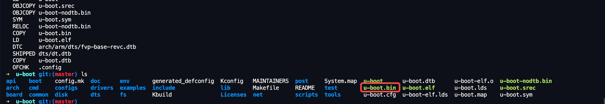
ATF构建
cd /data/Project/arm-trusted-firmware-lts-v2.8.4/
export CROSS_COMPILE=/data/toolchains/SYS_PUBLIC_TOOLS/.toolchain/gcc-arm-10.3-2021.07-x86_64-aarch64-none-linux-gnu-linux-5.10/bin/aarch64-none-linux-gnu-
// 调试编译
make PLAT=fvp BL33=/data/Project/u-boot/u-boot.bin DEBUG=1 all fip
// 正常编译
make PLAT=fvp BL33=/data/Project/u-boot/u-boot.bin all fip
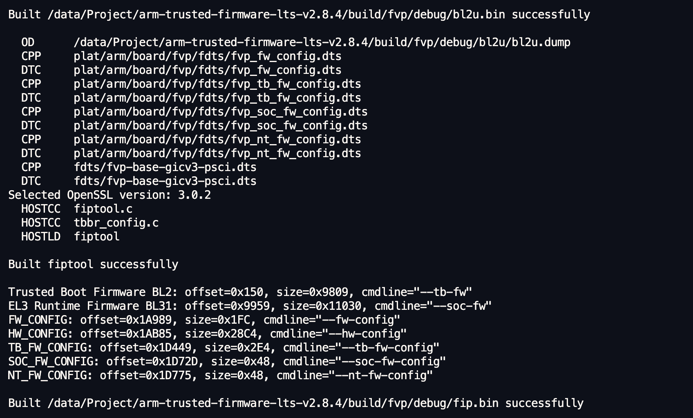
ATF运行
AEMv8 Base FVP
使用FVP_Base_RevC-2xAEMv8A运行
cd /data/Project/arm-trusted-firmware-lts-v2.8.4/build/fvp/debug/
export DISPLAY=:0
运行命令：
/data/Project/Base_RevC_AEMvA_pkg/models/Linux64_GCC-9.3/FVP_Base_RevC-2xAEMvA \
-C pctl.startup=0.0.0.0 \
-C bp.secure_memory=1 \
-C bp.tzc_400.diagnostics=1 \
-C cluster0.NUM_CORES=4 \
-C cluster1.NUM_CORES=4 \
-C cache_state_modelled=1 \
-C bp.secureflashloader.fname="./bl1.bin" \
-C bp.flashloader0.fname="./fip.bin"
# 如果需要运行到rootfs请添加下方参数，
--data cluster0.cpu0="<path-to>/<kernel-binary>"@0x80080000 \
--data cluster0.cpu0="<path-to>/<ramdisk>"@0x84000000
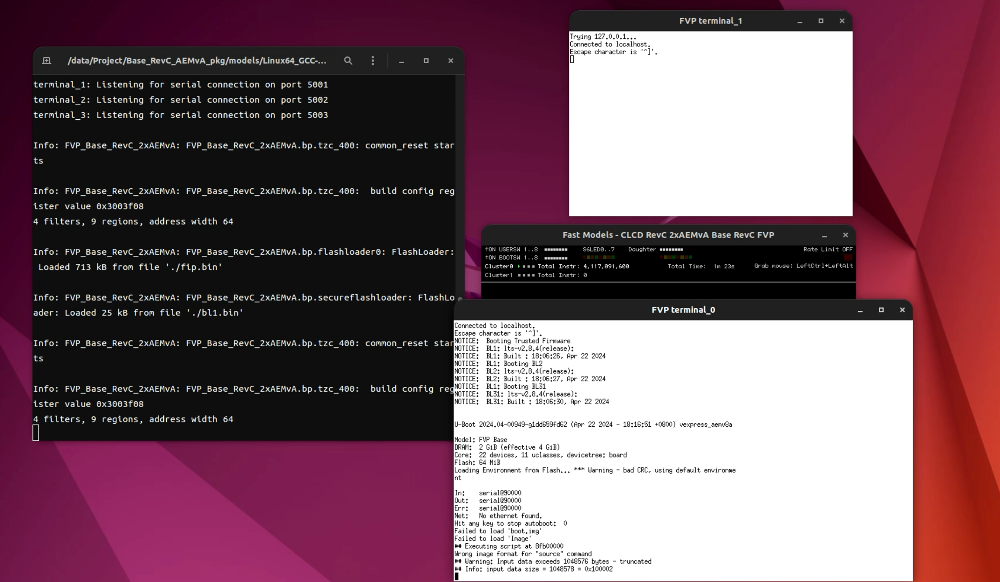
TF-A Tests构建并运行
export CROSS_COMPILE=/data/toolchains/SYS_PUBLIC_TOOLS/.toolchain/gcc-arm-10.3-2021.07-x86_64-aarch64-none-linux-gnu-linux-5.10/bin/aarch64-none-linux-gnu-
git clone https://review.trustedfirmware.orgTF-A/tf-a-tests.git
cd tf-a-tests
make PLAT=fvp tftf
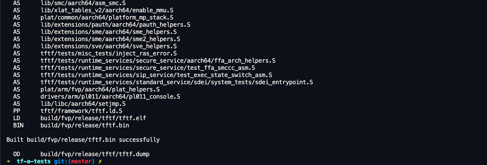
重编译ATF，指定bl33.bin为tftf.bin
cd /data/Project/arm-trusted-firmware-lts-v2.8.4/
export CROSS_COMPILE=/data/toolchains/SYS_PUBLIC_TOOLS/.toolchain/gcc-arm-10.3-2021.07-x86_64-aarch64-none-linux-gnu-linux-5.10/bin/aarch64-none-linux-gnu-
make PLAT=fvp BL33=/data/Project/tf-a-tests/build/fvp/release/tftf.bin all fip
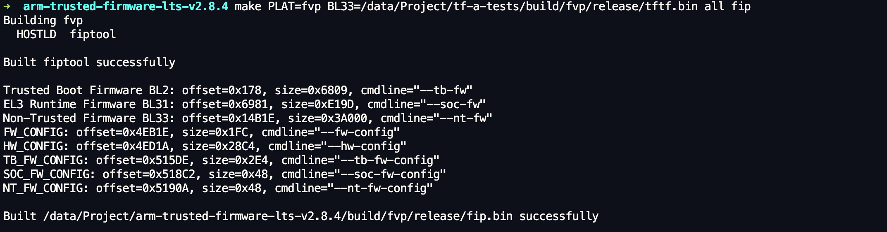
重新使用FVP运行，成功引导进入tftf中
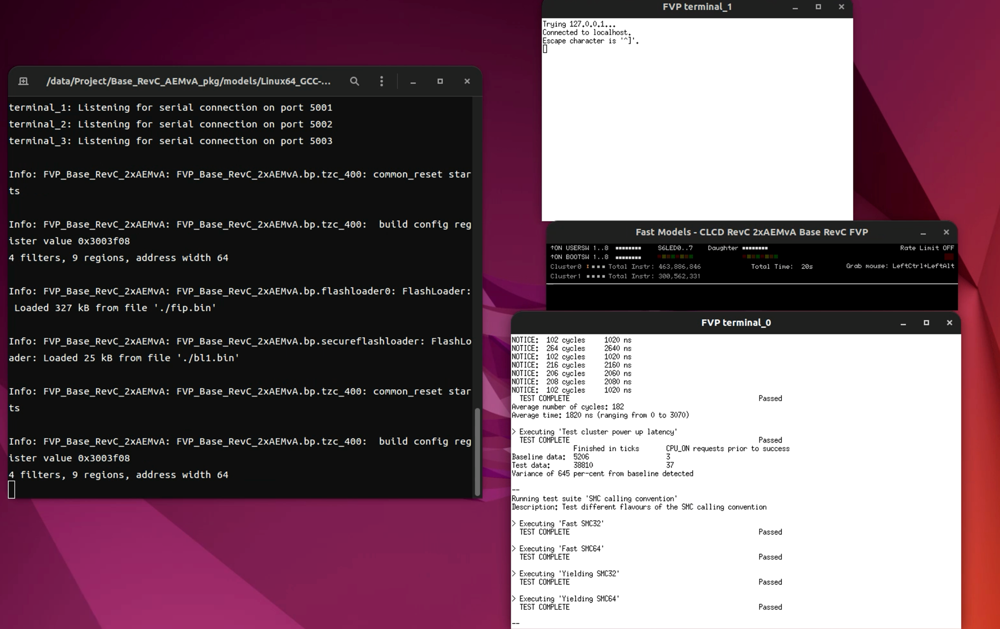
运行完成后会输出测试结果并提示退出
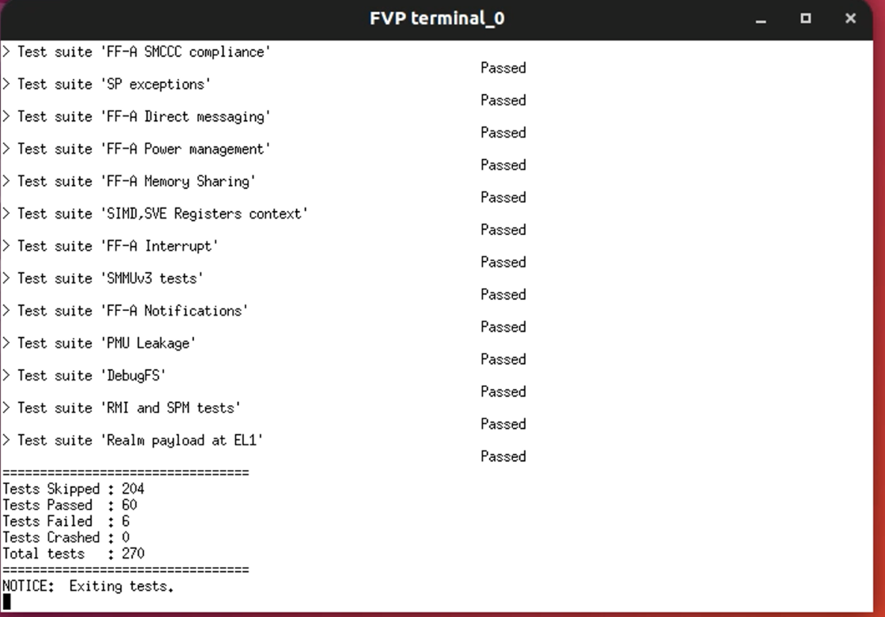
SMC Fuzz
推荐阅读：https://www.trustedfirmware.org/docs/Directed_Radomized_SMC_Presentation.pdf
默认配置运行
export CROSS_COMPILE=/data/toolchains/SYS_PUBLIC_TOOLS/.toolchain/gcc-arm-10.3-2021.07-x86_64-aarch64-none-linux-gnu-linux-5.10/bin/aarch64-none-linux-gnu-
make PLAT=fvp SMC_FUZZING=1 SMC_FUZZ_DTS=/data/Project/tf-a-tests/smc_fuzz/dts/top.dts TESTS=smcfuzzing tftf
注意这里的SMC_FUZZ_DTS是可以自定义的，这里使用了官方提供的top.dts
/*
* Copyright (c) 2023, Arm Limited. All rights reserved.
*
* SPDX-License-Identifier: BSD-3-Clause
*/
/*
* Top level device tree file to bias the SMC calls. T
* he biases are arbitrary and can be any value.
* They are only significant when weighted against the
* other biases. 30 was chosen arbitrarily.
*/
/dts-v1/;
/ {
sdei {
bias = <30>;
sdei_version {
bias = <30>;
functionname = "sdei_version_funcid";
};
sdei_pe_unmask {
bias = <30>;
functionname = "sdei_pe_unmask_funcid";
};
sdei_pe_mask {
bias = <30>;
functionname = "sdei_pe_mask_funcid";
};
sdei_event_status {
bias = <30>;
functionname = "sdei_event_status_funcid";
};
sdei_event_signal {
bias = <30>;
functionname = "sdei_event_signal_funcid";
};
sdei_private_reset {
bias = <30>;
functionname = "sdei_private_reset_funcid";
};
sdei_shared_reset {
bias = <30>;
functionname = "sdei_shared_reset_funcid";
};
};
tsp {
bias = <30>;
tsp_add_op {
bias = <30>;
functionname = "tsp_add_op_funcid";
};
tsp_sub_op {
bias = <30>;
functionname = "tsp_sub_op_funcid";
};
tsp_mul_op {
bias = <30>;
functionname = "tsp_mul_op_funcid";
};
tsp_div_op {
bias = <30>;
functionname = "tsp_div_op_funcid";
};
};
};
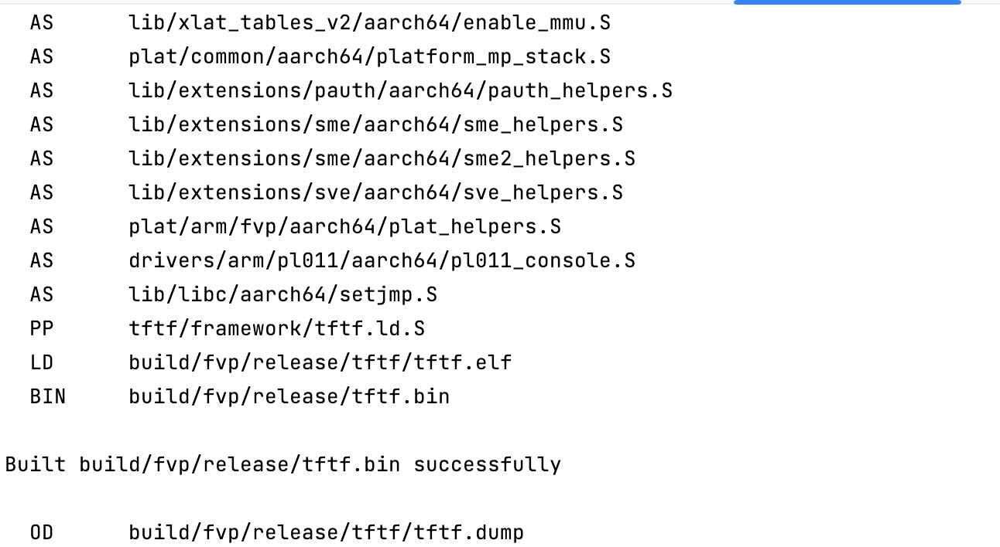
重编译ATF，并替换tftf.bin
cd /data/Project/arm-trusted-firmware-lts-v2.8.4/
export CROSS_COMPILE=/data/toolchains/SYS_PUBLIC_TOOLS/.toolchain/gcc-arm-10.3-2021.07-x86_64-aarch64-none-linux-gnu-linux-5.10/bin/aarch64-none-linux-gnu-
make PLAT=fvp BL33=/data/Project/tf-a-tests/build/fvp/release/tftf.bin all fip
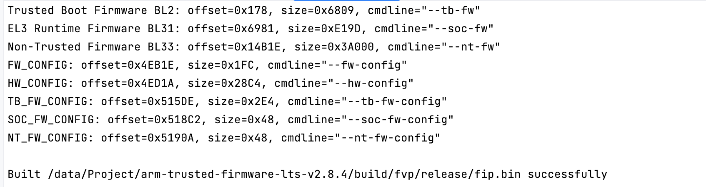
再次运行
cd /data/Project/arm-trusted-firmware-lts-v2.8.4/build/fvp/release/
/data/Project/Base_RevC_AEMvA_pkg/models/Linux64_GCC-9.3/FVP_Base_RevC-2xAEMvA \
-C pctl.startup=0.0.0.0 \
-C bp.secure_memory=1 \
-C bp.tzc_400.diagnostics=1 \
-C cluster0.NUM_CORES=4 \
-C cluster1.NUM_CORES=4 \
-C cache_state_modelled=1 \
-C bp.secureflashloader.fname="./bl1.bin" \
-C bp.flashloader0.fname="./fip.bin"
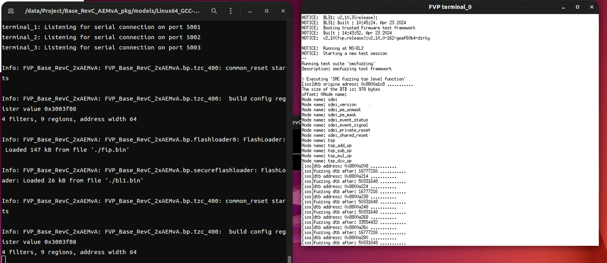
扩展SMC fuzz
先来通过目录结构确定需要扩展的文件1. Dts 2. fuzz helper
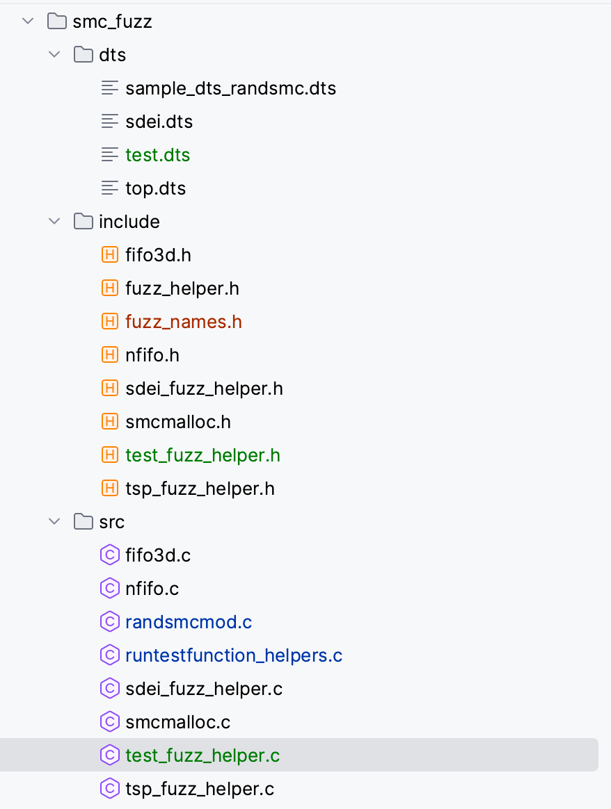
- 首先创建
test_fuzz_helper.h，引用上述头文件(tftf框架), 并且定义与dts中function_name对应的常量funcid。最后在底部申明使用到的函数入口run_test_fuzz和具体的handler函数tftf_test_smc
//
// Created by ios on 24-4-23.
//
#include <fuzz_helper.h>
#include <power_management.h>
#include <sdei.h>
#include <test_helpers.h>
#include <tftf_lib.h>
#include <timer.h>
#ifndef test_funcid
#define test_funcid 0
#endif
void tftf_test_smc(uint64_t tsp_id, char *funcstr);
void run_test_fuzz(int funcid);
- 完善具体的test_fuzz_helper.c,具体功能为打印固定的字符串
ios-test并输出测试信息。
#include <fuzz_names.h>
#include <test_fuzz_helper.h>
void tftf_test_smc(uint64_t tsp_id, char *funcstr)
{
printf("current str: %s, this is test smc fuzz handler!\n", funcstr);
}
/*
* TSP function called from fuzzer
*/
void run_test_fuzz(int funcid)
{
tftf_test_smc(funcid, "ios-test");
}
-
创建对应的test.dts ，主要定义了两个功能test_add和test_mov，并且对应的函数均为test_funcid。
/* * Copyright (c) 2023, Arm Limited. All rights reserved. * * SPDX-License-Identifier: BSD-3-Clause */ /* * Top level device tree file to bias the SMC calls. T * he biases are arbitrary and can be any value. * They are only significant when weighted against the * other biases. 30 was chosen arbitrarily. */ /dts-v1/; / { test { bias = <30>; test_add { bias = <30>; functionname = "test_funcid"; }; test_mov { bias = <30>; functionname = "test_funcid"; }; }; }; -
将run_test_fuzz添加到
runtestfunction_helpers.c中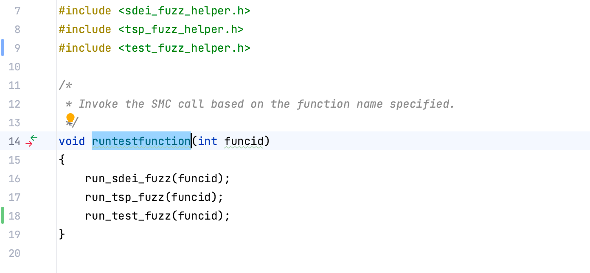
-
将
tftf/tests/tests-smcfuzzing.mk中的编译依赖中添加test_fuzz_helper.c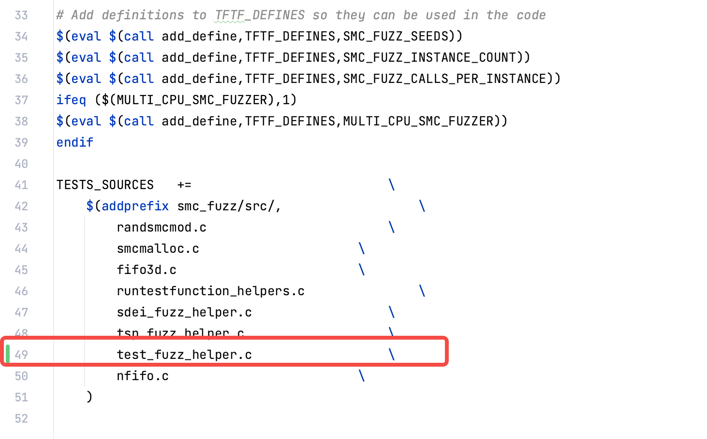
-
调整运行的次数和并发数，
tftf/tests/tests-smcfuzzing.mk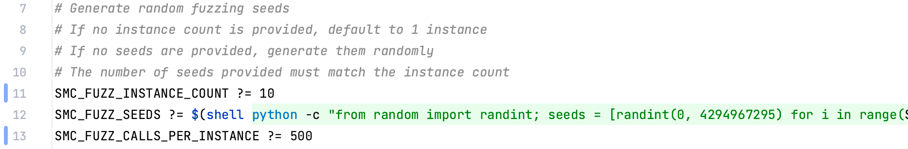
-
编译仅包含smcfuzz的tftf
export CROSS_COMPILE=/data/toolchains/SYS_PUBLIC_TOOLS/.toolchain/gcc-arm-10.3-2021.07-x86_64-aarch64-none-linux-gnu-linux-5.10/bin/aarch64-none-linux-gnu-
make PLAT=fvp SMC_FUZZING=1 SMC_FUZZ_DTS=/data/Project/tf-a-tests/smc_fuzz/dts/test.dts TESTS=smcfuzzing tftf
- 打包tftf到fip.bin中
cd /data/Project/arm-trusted-firmware-lts-v2.8.4/
export CROSS_COMPILE=/data/toolchains/SYS_PUBLIC_TOOLS/.toolchain/gcc-arm-10.3-2021.07-x86_64-aarch64-none-linux-gnu-linux-5.10/bin/aarch64-none-linux-gnu-
make PLAT=fvp BL33=/data/Project/tf-a-tests/build/fvp/release/tftf.bin all fip
- 运行smc_fuzz
cd /data/Project/arm-trusted-firmware-lts-v2.8.4/build/fvp/release/
/data/Project/Base_RevC_AEMvA_pkg/models/Linux64_GCC-9.3/FVP_Base_RevC-2xAEMvA \
-C pctl.startup=0.0.0.0 \
-C bp.secure_memory=1 \
-C bp.tzc_400.diagnostics=1 \
-C cluster0.NUM_CORES=4 \
-C cluster1.NUM_CORES=4 \
-C cache_state_modelled=1 \
-C bp.secureflashloader.fname="./bl1.bin" \
-C bp.flashloader0.fname="./fip.bin"
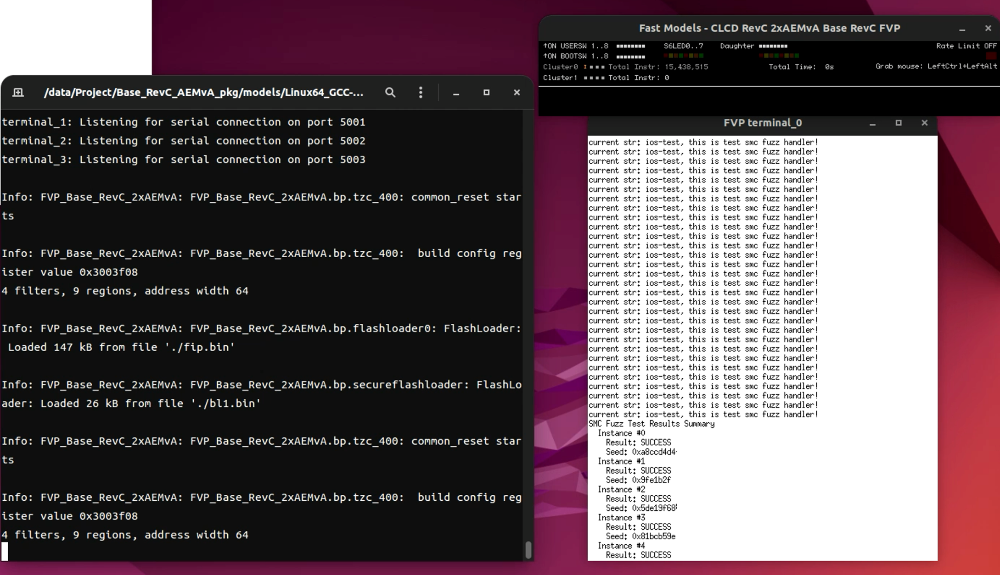
ATF BL1 FUZZ
场景描述
对BL1、BL2、BL31、BL32阶段的代码实现功能测试。此阶段代码多数为厂商定制。
功能描述
- 针对函数级功能参数FUZZ
- 支持模拟器全阶段FUZZ（BL1、BL2、BL31、BL32）
功能实现
待补充
效果展示
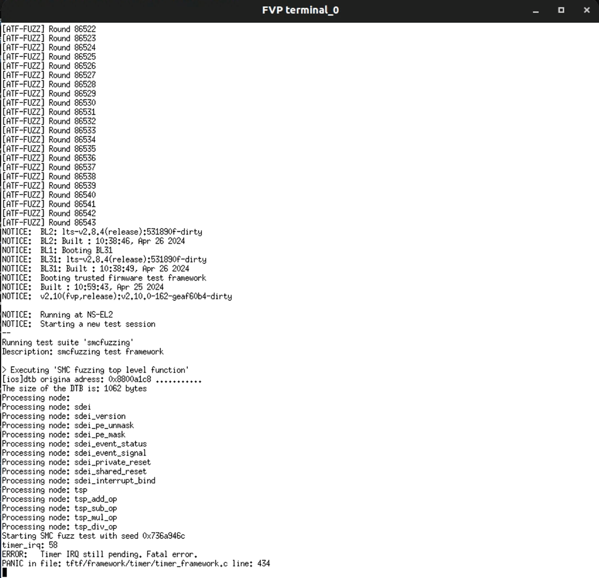